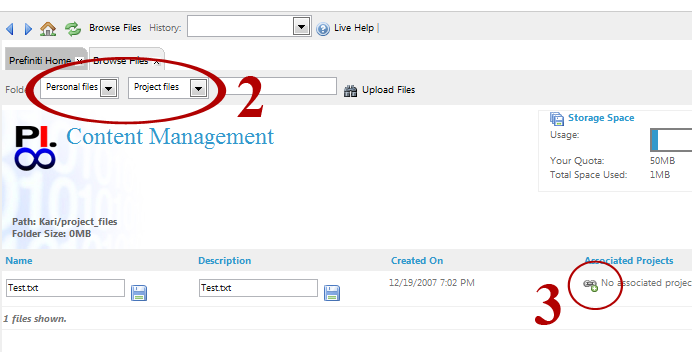
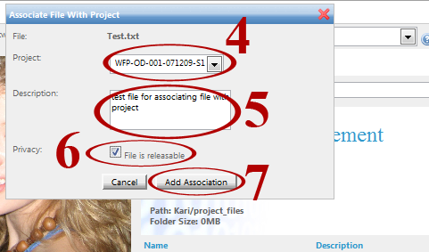
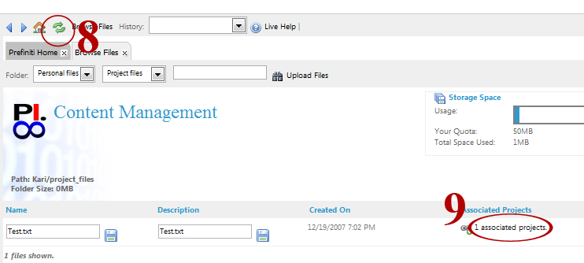
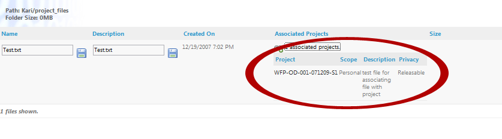

By associating a file to a project, you can make a file accessible to any user associated with the project you select.
Select 'My Files' (step 1). A new 'Browse Files' window will appear.
Use the dropdown menus to select the location in which your file is stored (step 2). Click on the icon 'No associated projects' next to the file you which to associate (step 3).

In the 'Associate File With Project' box that appears, use the drop down menu to select the project to which you wish to associate your file (step 4). Type a description of your file for other users to see (step 5). If you want to make your file accessible to other users who are associated with the project, select the 'File is releasable' option (step 6). Click 'Add Association' (Step 7).

To view your project association click the refresh button (step 8). Click on '1 associated projects' (step 9).

The details of your project association will appear:
